Old integrated GPUs
WebGL2 and GLES3: a flat sky and fog, procedural trees, FXAA.
30 fps budget
osage engine
osage is an open-source game engine for large, living worlds — built by people and AI agents, on Bevy and wgpu. Its first world, osage kart, runs the same race from an integrated GPU to full ray tracing.
Free and open source · Windows builds · Linux and macOS from source
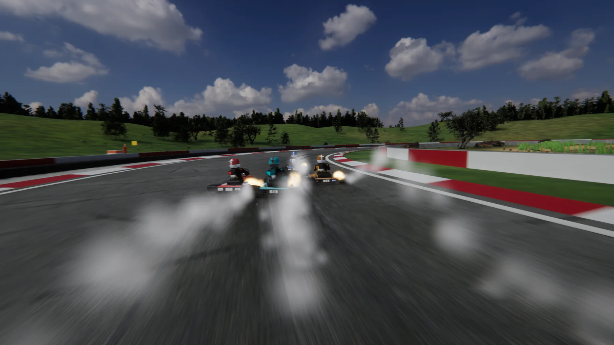
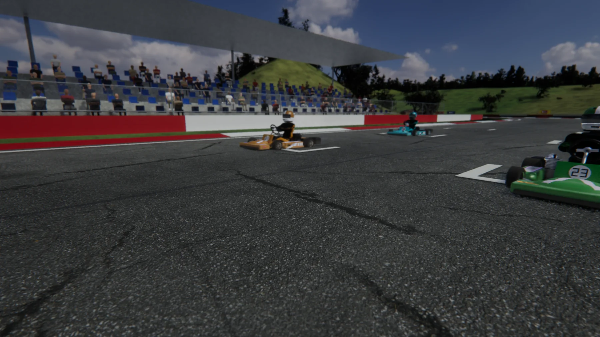
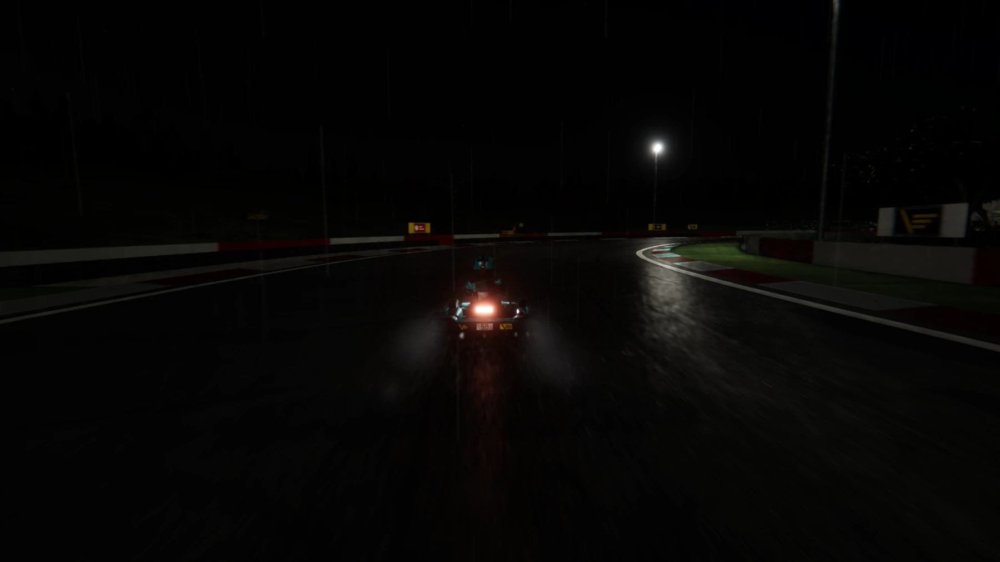
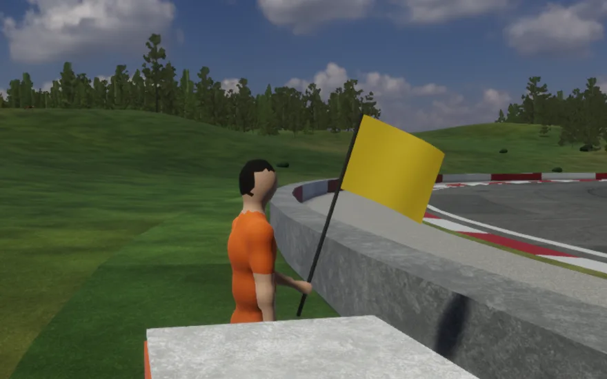
November 14, 2026
Clouds' shadows drift over the land on the wind, and marshals wave cloth flags as the karts come by.
Release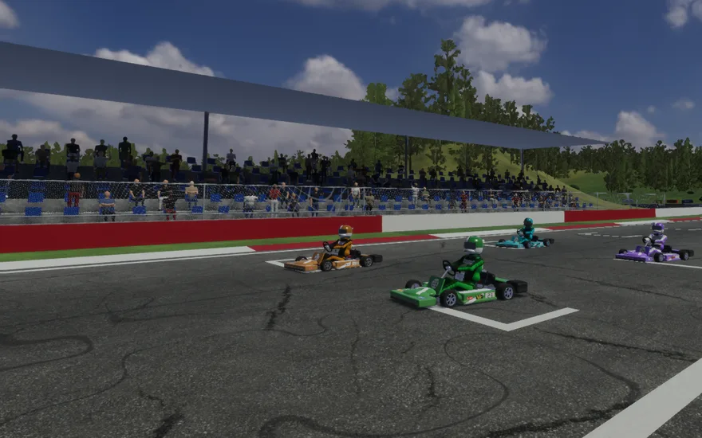
November 14, 2026
Spectators stand up and cheer, each in their own way and time. Birds take off, rabbits bolt, deer look up.
Release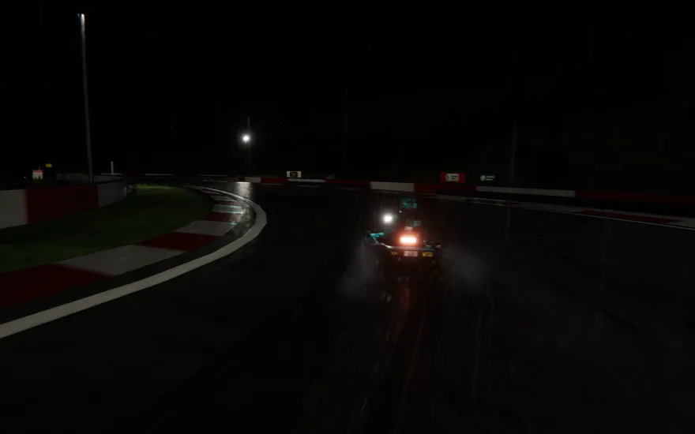
November 14, 2026
Tier T4 traces its light with Bevy Solari. osage filters the grain itself — no proprietary SDK — in 2.3 ms.
Rendering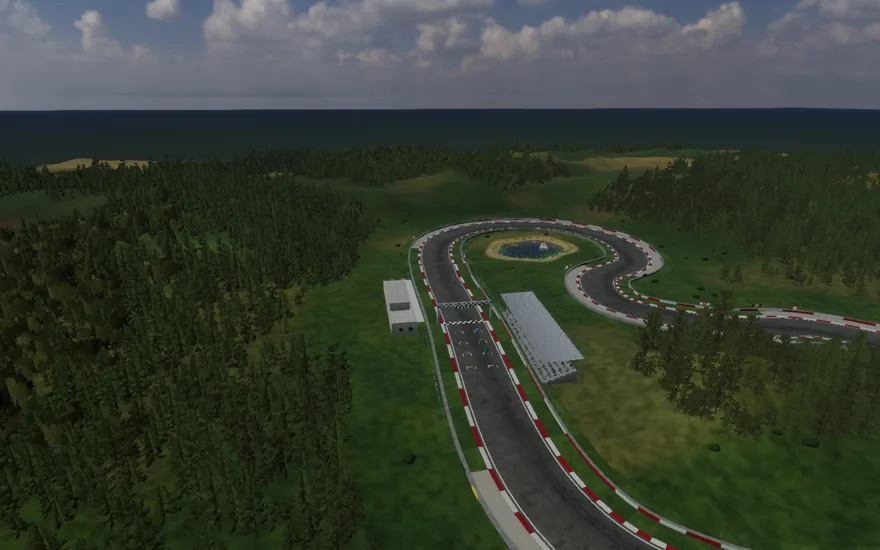
November 14, 2026
The engine's core runs and its first world is playable. The documentation now says what is built, and what is next.
ProjectThe first world
An original arcade racer built to prove the engine: tight handling, a circuit that lives around it, and one race shared by every kind of client — native, browser, phone or AI agent.
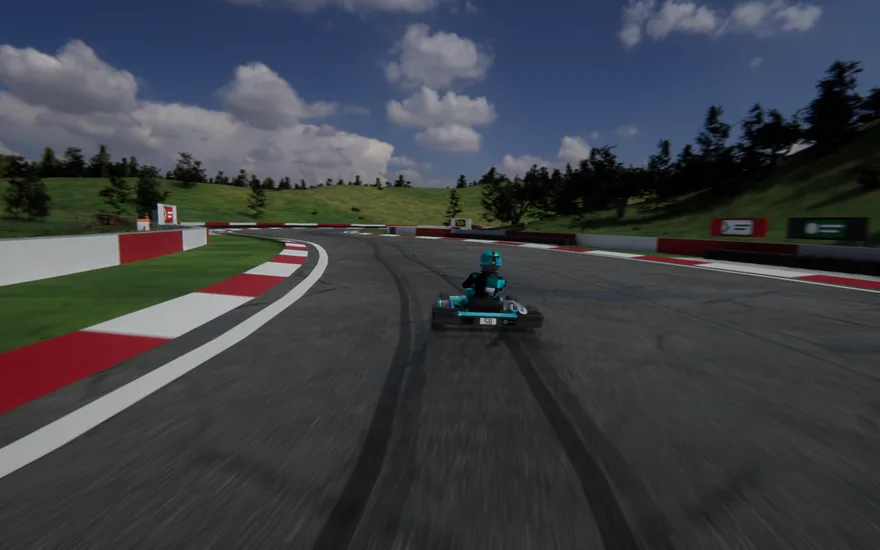
Drift, boost, fly A crowd that follows the race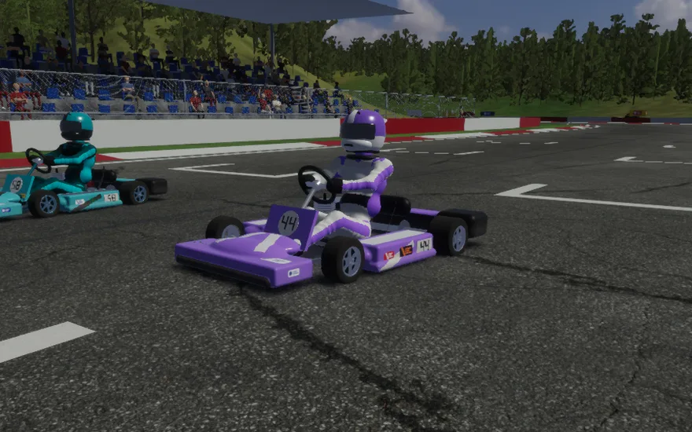
Karts that look raced Six circuits, cups, ghosts Night races and rain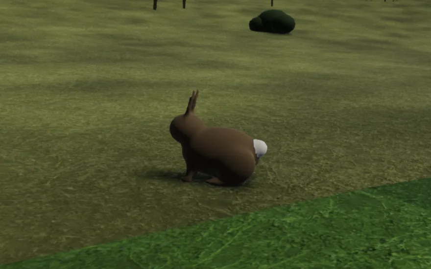
Wildlife that minds the karts Marshals at their posts Ten items, battles, botsRendering
At its highest tier osage traces its light: the sun, the sky and every lamp reach a surface only where nothing stands between, and every lit surface lights the others. Floodlights mirror in a wet road; the grass greens the underside of a kart.
A denoiser of our own — each surface averaged over the frames before, then filtered along the scene's edges — keeps it clean within a 30-frames-a-second budget at 1440p.
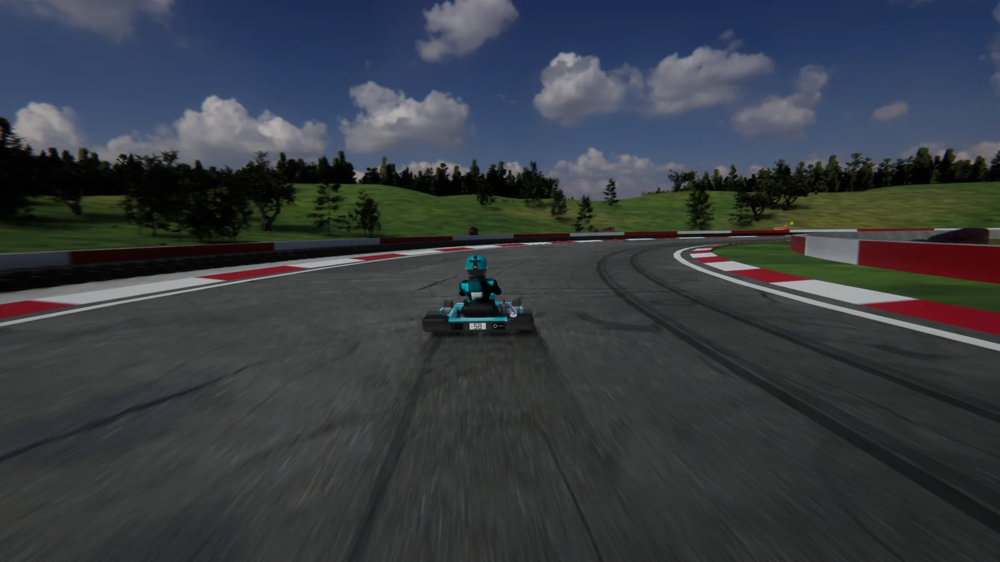
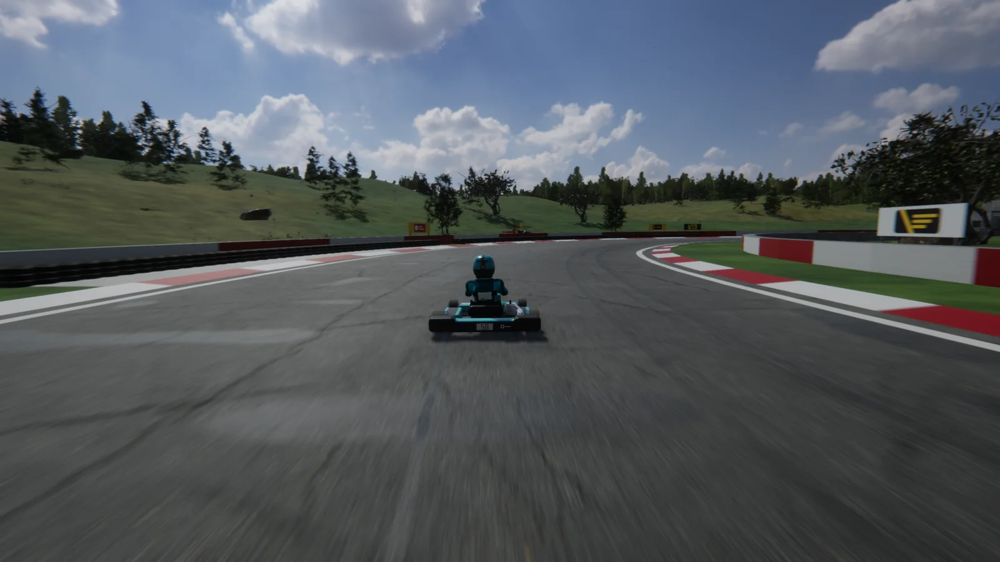
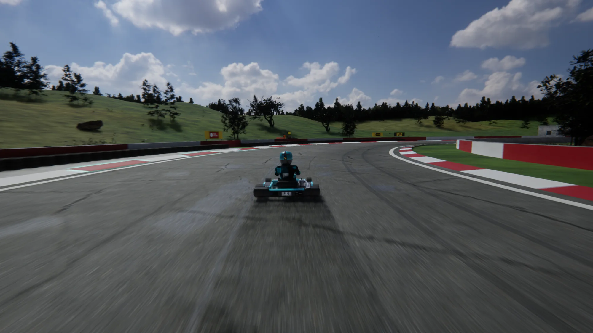
Any hardware
Every technique is chosen per tier, and every tier has a frame-time budget that a bench measures on reference hardware. If the best picture fails on a machine, the game finds the best one that works, effect by effect.
WebGL2 and GLES3: a flat sky and fog, procedural trees, FXAA.
30 fps budget
WebGPU: a physical atmosphere, shadows, ambient occlusion, bloom, textured ground.
60 fps at 1080p, set on an Intel Iris Xe
A photographed sky as light, modelled trees and grass, soft shadows, TAA, motion blur.
14.4 ms at 1440p on an NVIDIA L4
Direct and indirect light traced by the GPU (Bevy Solari, ReSTIR) and osage's own denoiser.
29.9 ms by day, 32.8 ms at night in the rain
From the releases, take osage-kart-windows-x64.zip and osage-kart-content.zip.
Unzip both into one folder and run play.bat. The folder updates itself before each game.
WASD or arrows · Space to drift · F for the item
play-two.bat splits the screen, host.bat serves the race to your network, and on an RTX card play.bat --tier T4 traces the light.
The engine
Neither a fork nor a rewrite from scratch: osage builds on Bevy and wgpu, gives back upstream what belongs there, and writes what nothing open provides yet.
Native, browser, phone, headless — every client joins the same world, at its own fidelity.
An agent races, observes and acts through MCP tools, under a delegation from a responsible human.
A world's rules and content live in their own crates, apart from the engine, under permissive licences.
Real devices mirror into a world, and in-world actions can drive them — with safety enforced next to the device.
The engine provides the tools; game rules and privacy belong to each world and its operator.
In the open
osage is organised so that many people and AI agents can work on it at once — and so that anyone can see why it is the way it is.
Community
Pick a workstream, measure before and after, and write down why. Every contribution comes with its proof.
osage stands for Open Source Advanced Game Engine. Osage is also the name of the Osage Nation, a sovereign Native American nation. This project is not affiliated with, endorsed by, or speaking for the Osage Nation. It uses none of the Nation's symbols, imagery, language or culture, unless the Nation chooses otherwise; the maintainer has written to the Nation to ask for its view, and its position will be published and respected.